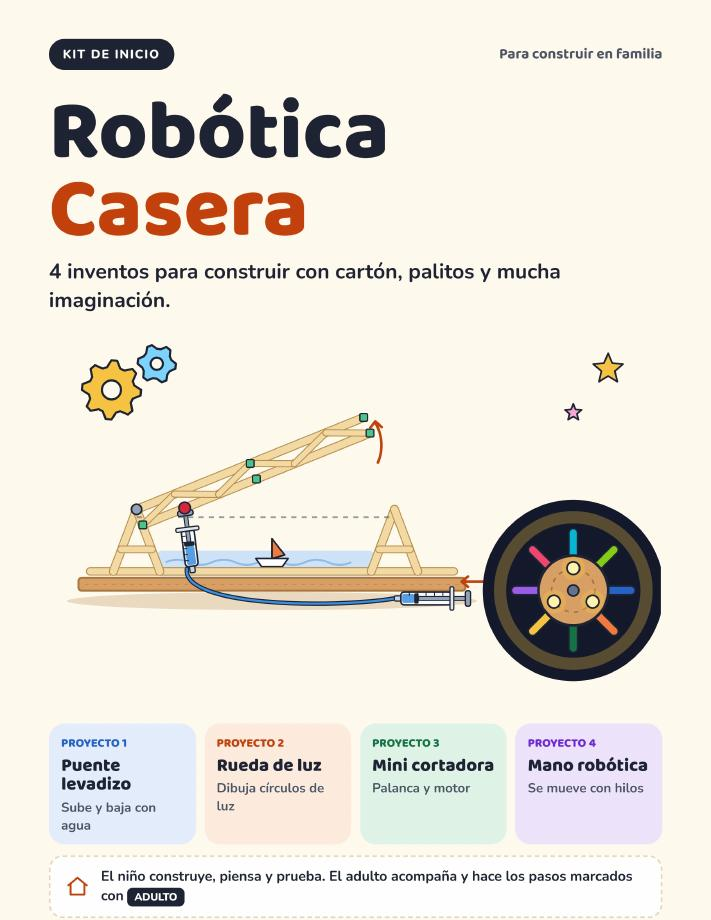
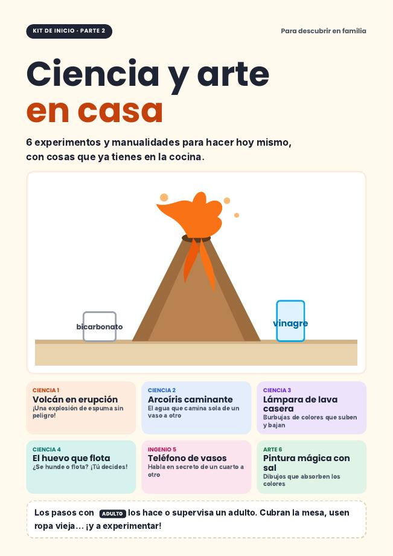

GUÍAS DIGITALES PARA HACER EN CASA
Las ideas se
hacen con las manos.
Inventos, experimentos y manualidades para compartir en familia. Elegí una guía, prepará los materiales y empezá a crear.
Explorar el catálogo

CATÁLOGO DIGITAL
Elegí tu próximo proyecto
Guías con materiales, instrucciones paso a paso y actividades para hacer juntos.
ANTES DE ELEGIR
Preguntas frecuentes
¿Qué incluye cada kit?
Un archivo PDF con actividades, listas de materiales e instrucciones. Las herramientas y los materiales se consiguen por separado.
¿Puedo imprimir las guías?
Sí. Podés leer el PDF desde una pantalla o imprimir las páginas que necesites.
¿Qué actividades requieren ayuda de un adulto?
Las guías indican qué pasos realiza o supervisa un adulto. Revisá las indicaciones y los materiales antes de empezar un proyecto.
¿Cómo compro una guía?
Por ahora podés explorar el catálogo y ver las portadas. Las compras se habilitarán cuando estén disponibles los precios y el medio de pago.